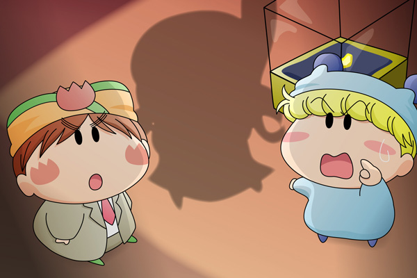

ミルモ「おい、本当に大丈夫なんだろうな…」
マンボ「まぁ任せておきたまえ！
オレの考えた秘策にミルモも驚かずにはいられないさ」
ミルモ「そういう自信満々なところがカッコ悪いんだよな」
マンボ「カッコ悪いって言うな～～っ」
ミルモ「…ったく…。オレ様がチョコを一ヶ月我慢して買った、幸せを呼ぶ
バナナダイヤちゃんだからな。
盗まれたらお前にはチョコ一年分払ってもらうからな！」
パッ！
二人が雑談している最中、突然部屋の電気が消えました。
部屋の窓からは月明かりが差し込みますが、その光が照らすマンボたちの足下に見慣れたシルエットが映りました。

ミルモ「き、き、来たぞ！
オレのバナナダイヤちゃんは誰にも渡さないからな！」
マンボ「来たな怪盗チョコソフトめ・・・。
今日こそは確実に捕まえてやるからな」
マンボがそう言い終わる前に、窓の外のソフトは階上へと消えていきました。
マンボ「オレは二階を見てくるから、ミルモはしっかり
バナナダイヤを見張っててくれ！」
ミルモ「お、おう」
バナナダイヤのショーケースにしがみつくミルモを背に、マンボは二階へと駆け込みました。
怪盗チョコソフトの第３話です。舞台は早くも決戦の場、ミルモ邸に移りました。そして怪盗チョコソフトの登場シーンも、怪盗モノではお決まりの現れ方にしてみました(笑)。今回はストーリーがほとんど進んでいませんが、次回はマンボの秘策がチョコソフトに向けられる…かも（未定）。
今回は欲の固まりであるミルモを描くのが楽しかったです。今回のストーリーではミルモは王子の設定ではなく、ある金持ちの主人という役柄をさせていますが、よくよく考えてみると私の描くストーリーではミルモは変な役を担当することが多いかもしれません。
(2007/2/3)